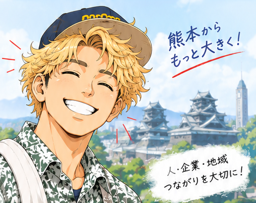

💬
コミュニケーション
会話を楽しむこと、質問すること、聴くことを大切にしています。

矢野 公太（やの こうた）です。
熊本学園大学 商学部 商学科の2年生です。
現在は、株式会社ピークスキャリアでインターンをしています。
周りからは「熱血」「バイタリティがある」「まじめ」と言われることが多く、興味を持ったことには積極的に取り組みます。
熊本を形作っている企業をもっと知り、地域の皆さまと関わる中で、自分自身も成長し、熊本の力になれる人を目指しています。
やってみる、調べてみる、人と話してみる。
それが僕の原動力です！
会話を楽しむこと、質問すること、聴くことを大切にしています。
興味を持ったらすぐに行動。でも、慎重によく考え、多角的に調べて物事を見る力があります。
ダジャレで鍛えられた発想力と、動画を2倍速で観る習慣で、素早く考え、行動できます。
やることを書き出し、優先順位をつけて取り組みます。
とりあえずやってみること。やってみてから考える姿勢です。
その時が来るまで継続して努力できます。
自分でやると決めたことは続けられます。
物事を多角的に見て、背景や本質を考える力があります。人や状況をよく観察し、行動につなげます。
サッカー観戦が好きです。イギリスに行き、プレミアリーグ（チェルシー対クリスタルパレス）を観戦しました。現地で観た試合の熱量やスタジアムの雰囲気は、今でも大きな刺激になっています。
一日中何でもしていいと言われたら、週末においしいお店に一人でご飯を食べに行くこと。高校2年生の頃から、行ったお店のご飯の写真を撮り始め、今では300枚近くになりました。新しいお店を開拓する時間がとても好きです。
営業・テレアポ・商談・イベント集客に取り組んでいます。29卒向けイベントを企画・集客し、4年生・3年生の先輩方の就活経験の共有や、自己分析のセッションなどを実施しました。当初は開催1か月前で集客4名でしたが、自分自身で集め方を確立し、目標達成に向けて取り組みました。
積極的に英語を話そうとし、その経験が今の自信につながっています。海外での生活を通して、社会や日本を広い視野で見ることができるようになり、日本に帰ってからも英語の勉強を続けています。
新入生の勧誘に力を入れ、看板・チラシ・ダーツ体験など5つの施策を立案・実行。その結果、男子20人・女子10人以上の新入生が来てくれました。D4 ダブルス3位の成績も残しました。